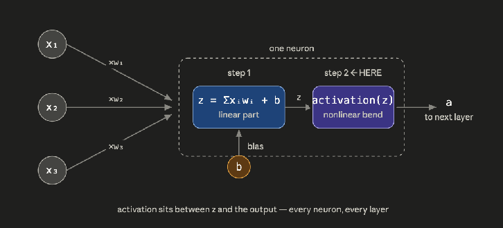

PyTorch
ML + PyTorch study notes: weights, activations, and how backprop actually updates a network.

#Weight initialization
Initial weights are random and small (bias often 0, though nn.Linear draws it randomly too).
- Random, not zero — if all weights start equal, every neuron computes the same thing and gets the same update forever (the symmetry problem). Randomness lets neurons specialize.
- Small, not huge — too big → signal/gradients explode (NaN); too small → they vanish (learns slowly).
- Principled inits scale randomness by layer fan: Xavier/Glorot (fan_in + fan_out; sigmoid/tanh) or He/Kaiming (fan_in; ReLU).
nn.Linearuses a Kaiming-uniform variant by default (≈U(±1/√fan_in), bias also random); callnn.init.xavier_*orkaiming_*explicitly for tanh or ReLU. - Set
torch.manual_seed(42)for reproducible runs.
#Weights & bias are linear; activations are nonlinear
A neuron has two parts:
- Weights and bias do plain linear math (). Both are learned, both updated by gradient descent.
- The activation function is what's nonlinear (and it's fixed, not learned).
- Why needed: stacking linear layers with no activation collapses to one linear equation. Activations let the network model curves/complex patterns.
Mental model: linear step → bend → linear step → bend → …
#How weights are updated (gradient descent)
One formula:
- Gradient = direction & steepness of how loss changes with the weight.
- positive → increasing the weight raises loss → decrease it.
- negative → increasing the weight lowers loss → increase it.
- Either way you move opposite the gradient → hence the minus sign ("descent").
- Learning rate = step size.
- too big → overshoot, bounce around, diverge.
- too small → painfully slow.
- Hill analogy: gradient points steepest uphill; you step downhill (opposite) repeatedly until you reach the valley (low loss).
Optimizers: plain SGD uses the formula directly; Adam adapts the step size per weight, but the core "move opposite the gradient" logic is the same.
#How gradients are calculated (backpropagation)
Backprop = the chain rule applied backwards through the network. In words: if A affects B and B affects C, then A's effect on C (A→B) (B→C). Just multiply the links.
#Worked single-neuron example
Setup: , , , .
Chain for : .
The cancels. Plugging in:
#Why the gradient is per-weight
Every weight shares the same error term but is multiplied by its own input . Different input → different gradient. ('s input was 4, so its gradient is 4× 's.)
#General per-weight formula
Same "error × input" shape at every layer, however deep.
#Multi-layer: why "back"
For an earlier-layer weight the chain is longer (more links multiplied). The front part of that product is shared by all weights feeding a neuron, so backprop computes it once at the output and passes it backward as an "error signal" . Working right-to-left avoids recomputing shared pieces — that's the efficiency trick.
#Division of labor in PyTorch
- forward pass → compute prediction, autograd records every operation.
loss.backward()→ chain-rule backwards, store one gradient per weight inweight.grad.opt.step()→ use the gradients to nudge every weight simultaneously.
#Is the update layer-by-layer or all at once?
All at once, at the end. No weight changes during backprop.
1. forward pass -> compute predictions using CURRENT weights
2. backward pass -> compute the GRADIENT for every weight in every layer
(last layer -> first layer, but ONLY computing numbers)
3. opt.step() -> NOW update every weight in every layer SIMULTANEOUSLYThe weights are frozen during the entire forward + backward pass. Backprop going right-to-left is only about computing gradients efficiently, not about updating in stages.
#Does layer 's update account for layer 's update?
No. Every gradient is computed w.r.t. the current (old) weights, assuming all other weights stay fixed. Each gradient answers: "If I nudge this one weight a tiny bit and everything else stays put, how does the loss change?" Then opt.step() nudges every weight at once — each under the assumption the others didn't move.
#Doesn't that overcorrect?
It can — and the learning rate is what keeps it safe.
- A gradient is only exactly true for an infinitesimally small step (it's a local linear approximation).
- The interaction between two layers' updates is a higher-order effect: → negligible when steps are small.
- So a small learning rate keeps the "everyone else held fixed" assumption valid. Any mismatch this round is re-measured and corrected next round.
- This is partly why too large a learning rate diverges: big steps make the layers interfere strongly, the assumption breaks, the overcorrection actually happens, and loss bounces/explodes.
#Mental model
- One iteration = a single synchronized step where every layer moves as if the others didn't.
- Deliberately "wrong" but self-correcting: many small approximate steps, re-measuring all gradients each time, beats one big "perfect" jump.
- Over many iterations the whole network converges together.
- (Fancier optimizers, batch-norm, second-order methods exist partly to handle these inter-layer interactions better — plain gradient descent just relies on "small steps + repeat.")
#Quick reference: the whole picture
1. Get data (pandas) -> preprocess (fit on train only) -> convert to tensors
2. Init weights randomly (small)
3. For each epoch:
forward: guess = activation(X·W + b)
loss: measure wrongness
backward: chain-rule back -> gradient per weight (error × input)
step: new = old − lr × gradient (every weight at once)
4. Loss curve slides down = learning
5. Evaluate on validation (eval mode, no_grad)